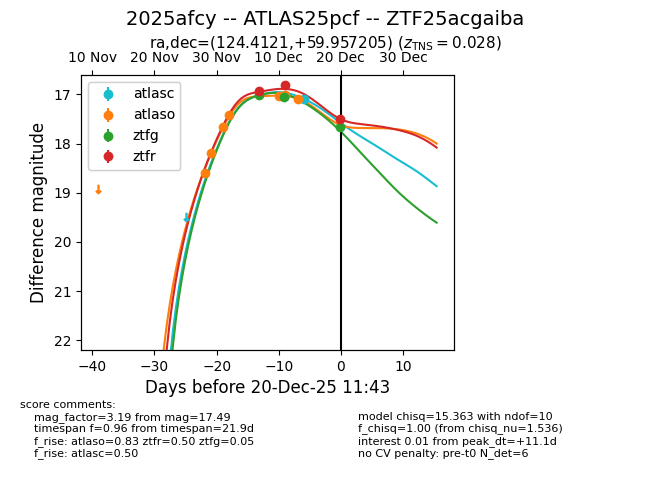
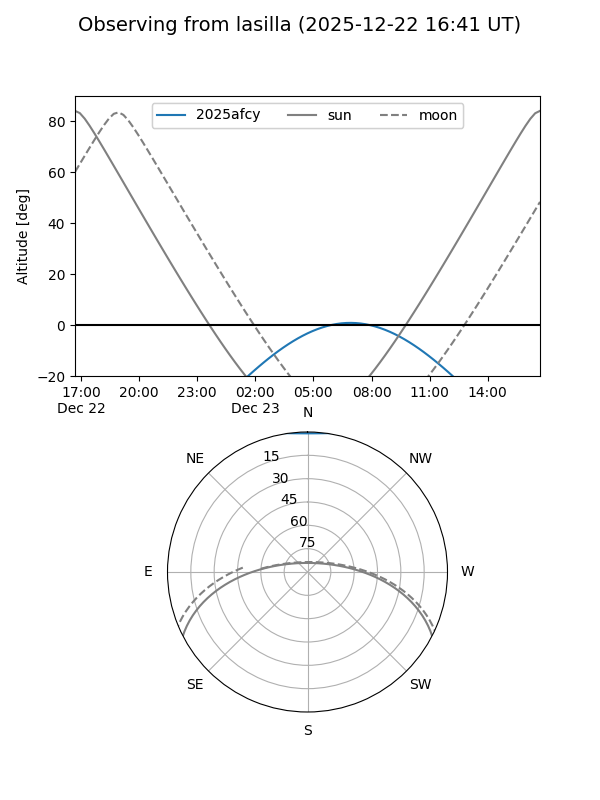
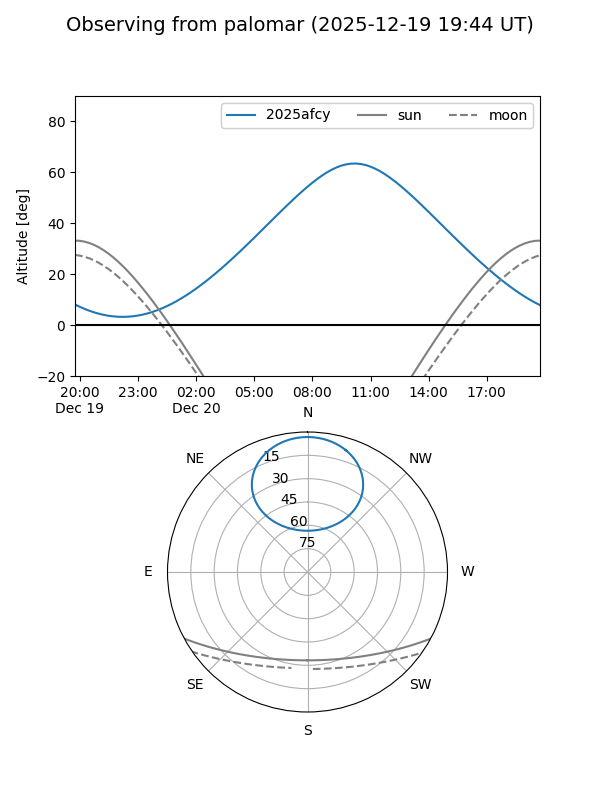

2025afcy
Target 2025afcy at 2025-12-22 17:06
Aliases and brokers:
FINK: fink-portal.org/ZTF25acgaiba
Lasair: lasair-ztf.lsst.ac.uk/objects/ZTF25acgaiba
ALeRCE: alerce.online/object/ZTF25acgaiba
TNS: wis-tns.org/object/2025afcy
YSE: ziggy.ucolick.org/yse/transient_detail/2025afcy
alt names
ZTF25acgaiba (ztf,fink_ztf)
2025afcy (tns,yse)
ATLAS25pcf (atlas)
Coordinates:
equatorial (ra, dec) = 124.4121,+59.95721
equatorial (HMS+DMS) = 08:17:38.89,+59:57:25.94
galactic (l, b) = (157.0781,+33.94559)
Flags:
confirmed ia
Photometry:
last atlasc=17.09, atlaso=17.10, ztfg=17.90, ztfr=17.49
1 atlasc, 7 atlaso, 4 ztfg, 3 ztfr detections
Lightcurve

Visibility


Additional plots